AI Career Coach
Conversational onboarding and profile-aware guidance.
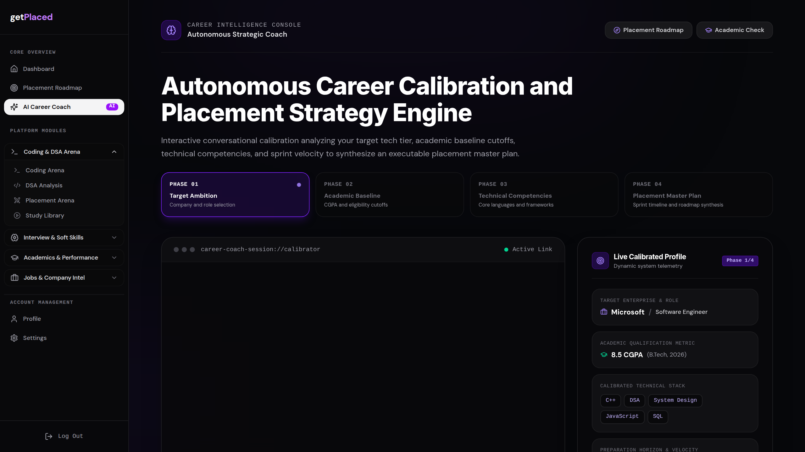
Hackathon product demo
Verified evidence becomes a company-specific plan, focused practice, and job discovery.
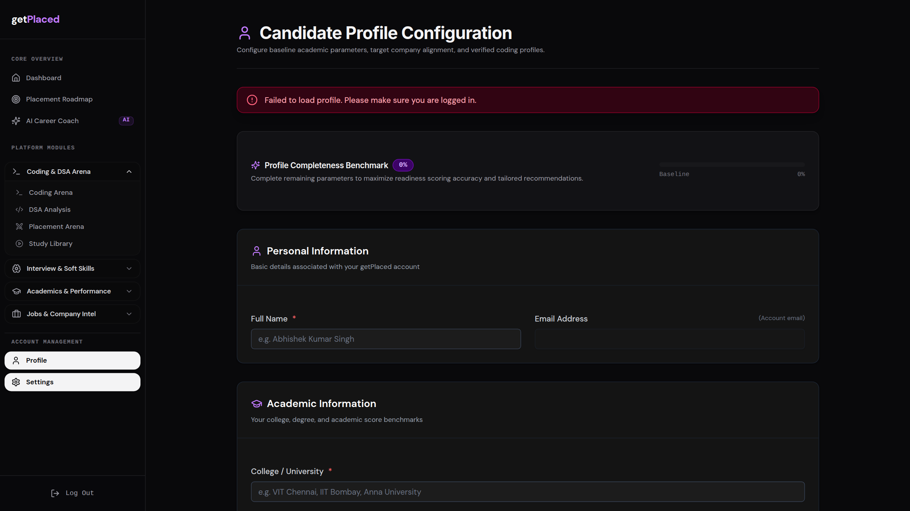
The problem
The product loop
Every module reads the same candidate profile and target role.
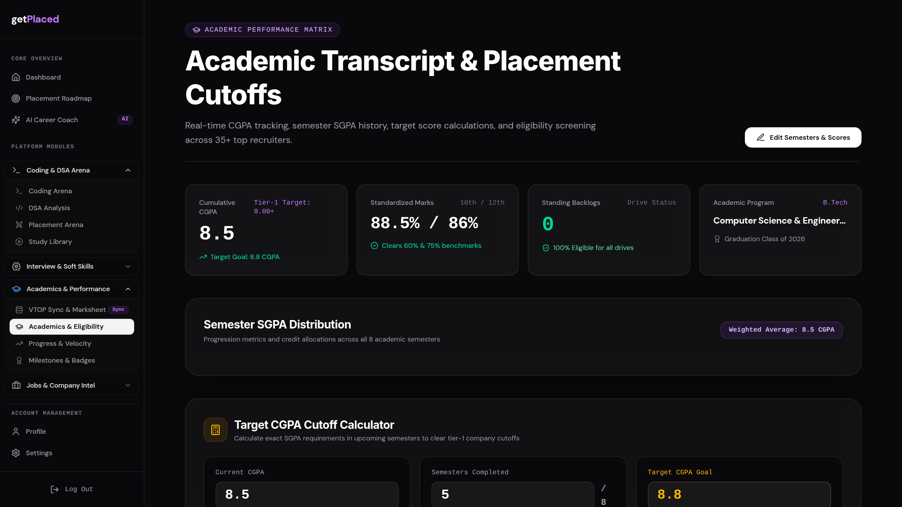
Evidence engine
readiness dimensions, reconciled into one explainable view.
Verified signals: academics, coding profiles, project repositories, resume, communication, interviews.
Target benchmark: current level, required level, gap, and confidence.
Honest output: missing data stays missing. Evidence is never invented.
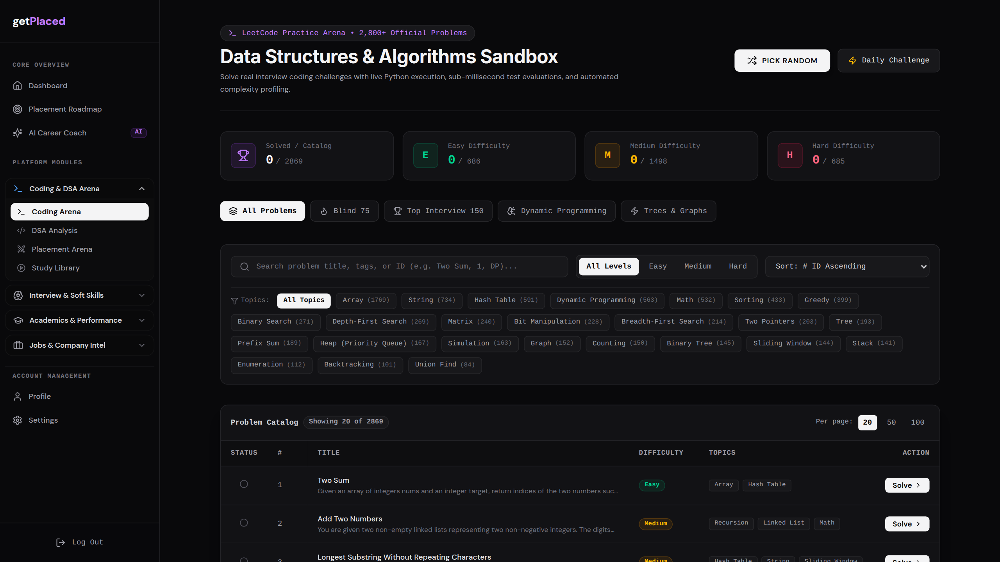
DSA and coding
2,800+ official problems meet LeetCode sync, topic diagnostics, submission consistency, and an in-browser coding sandbox.
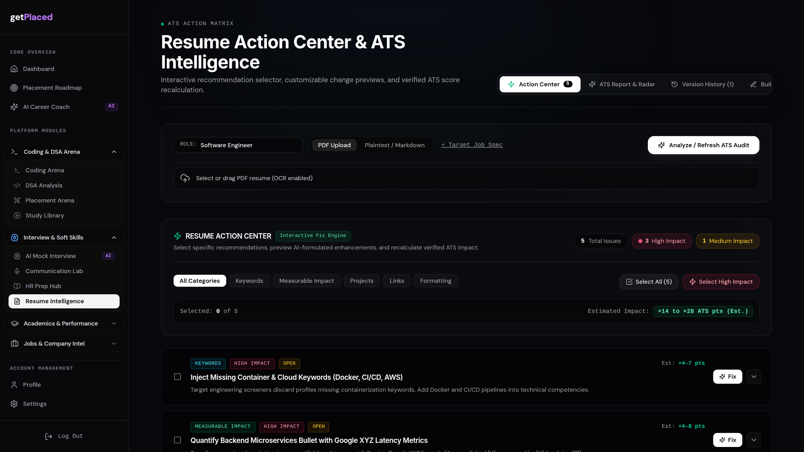
Resume intelligence
Upload a resume, match it to the target job, preview improvements, and track versions over time.
Action center: keywords, measurable impact, projects, links, formatting.
Impact preview: estimated gain before the candidate commits a change.
Builder and history: one-page output with version-to-version progress.
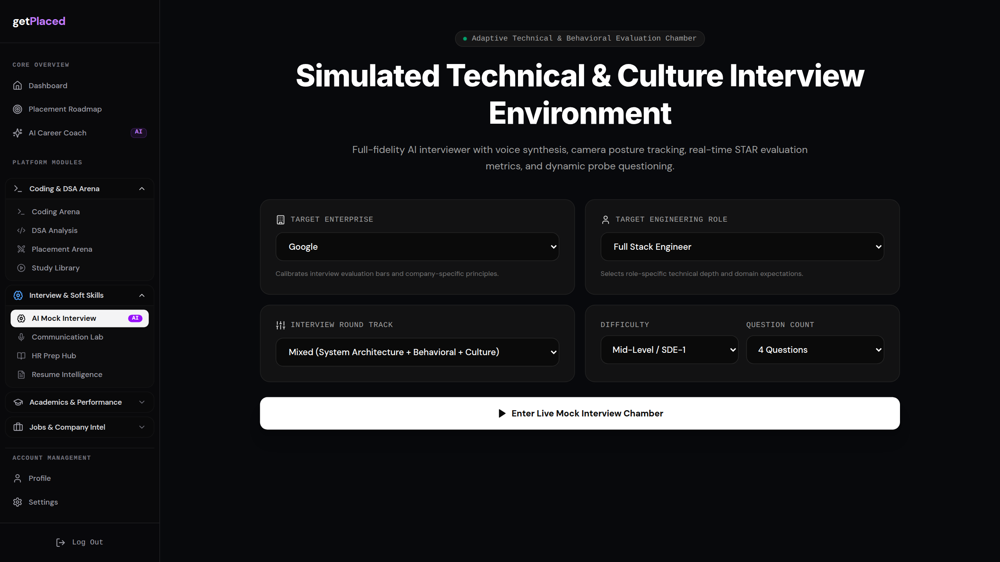
Interview readiness
Company and role calibrated sessions cover technical depth, behavior, culture, voice, and communication.
Adaptive questions from the candidate's real profile and projects.
Answer diagnostics for clarity, structure, confidence, and conciseness.
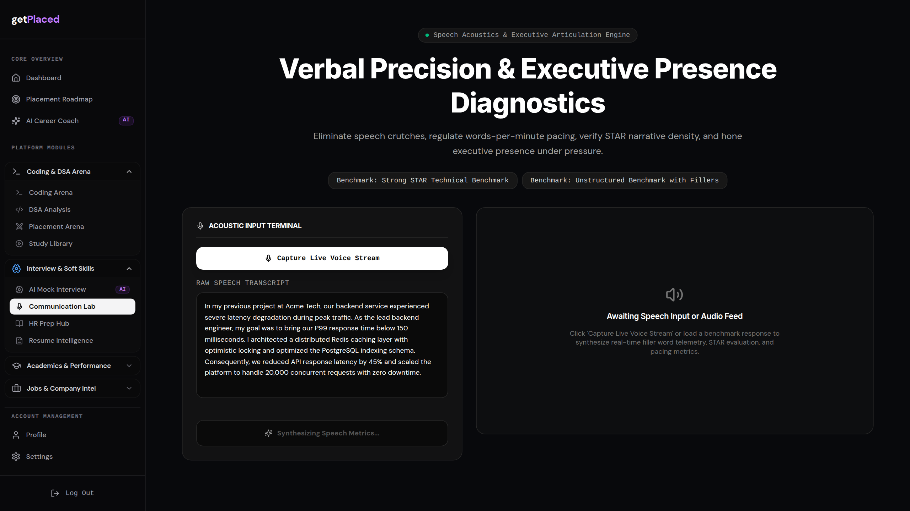
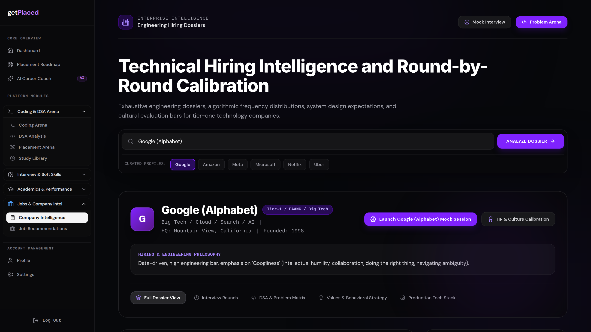
Company and opportunity intelligence
Hiring philosophy, interview architecture, DSA patterns, production stack, culture, and matched openings in one dossier.
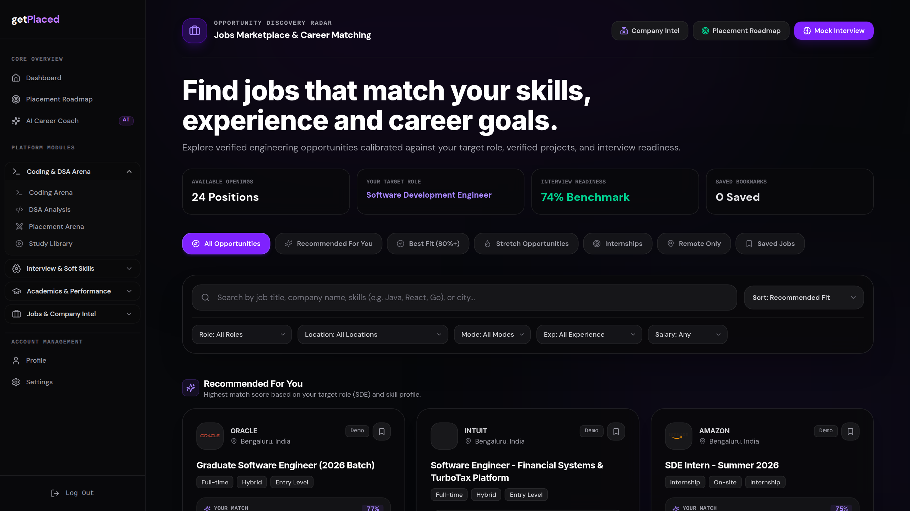
Academic eligibility
Track CGPA, calculate realistic semester targets, and screen eligibility across recruiter cutoffs.
“Increase your CGPA” is not a plan.
Required SGPA, remaining semesters, reachable range, and company threshold.
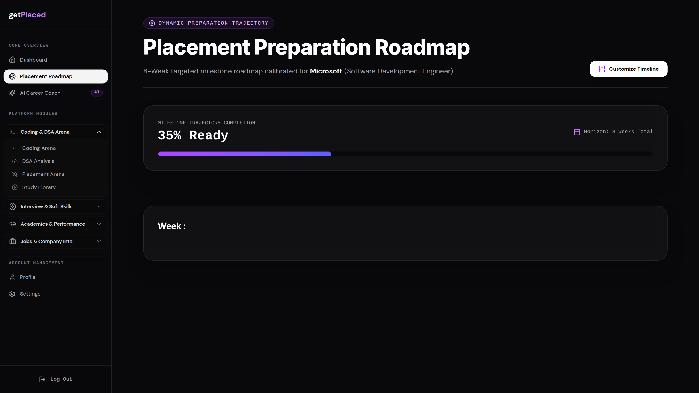
Roadmap and momentum
An explainable priority engine turns readiness gaps into a measurable 7-day plan and an 8-week trajectory.
Next actions ranked by impact, urgency, and prerequisite.
Snapshots explain what changed and why the score moved.
Milestones keep progress visible without hiding remaining gaps.
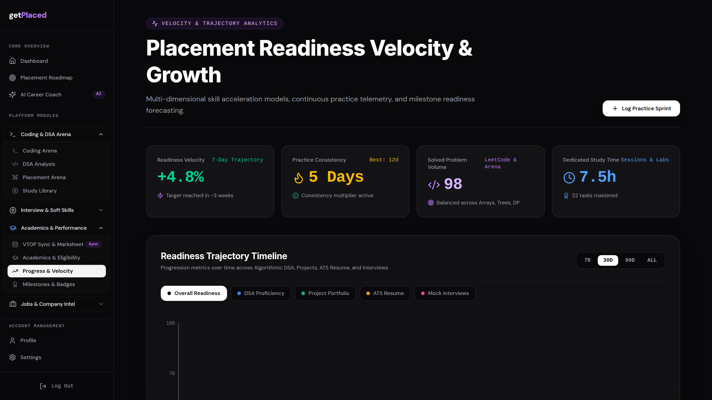
The engagement layer
The AI coach turns the entire product into a conversation, then connects learning and friendly competition to the same plan.
Conversational onboarding and profile-aware guidance.
Resources selected for the candidate's actual gaps.
Progress-based squads and readiness competition.
Visible wins across a long preparation journey.
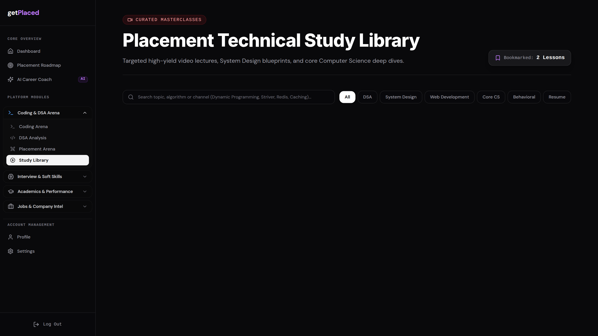
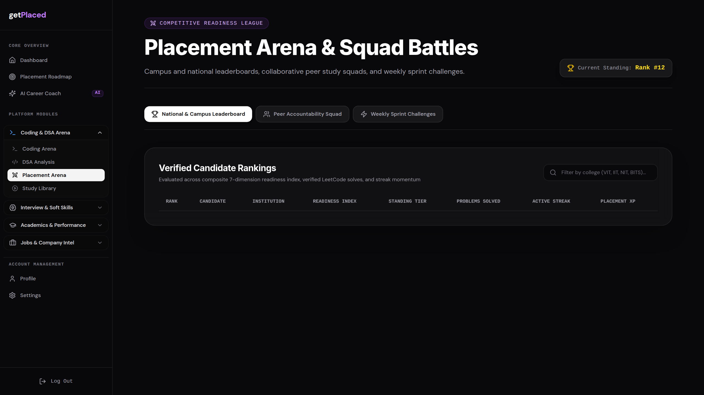
The outcome
getPlaced does not add another preparation tool. It connects the entire path to placement.